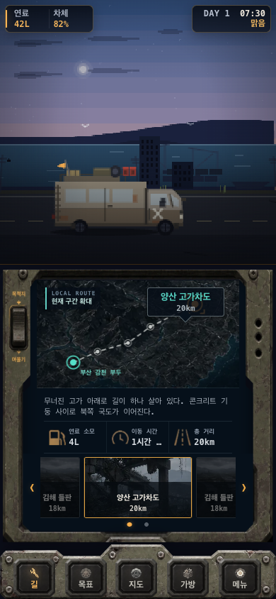
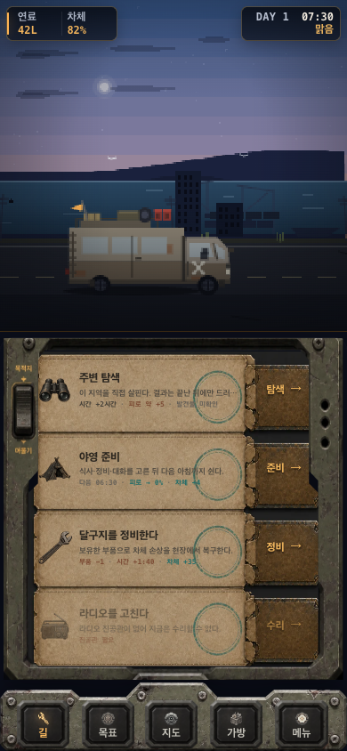

<!doctype html>
<meta charset="utf-8">
<title>Route / Stay Frame Lock Comparison</title>
<style>
  *{box-sizing:border-box}body{margin:0;padding:24px;background:#11151b;color:#eef2f4;font:700 16px/1.4 system-ui,sans-serif}
  h1{margin:0 0 18px;font-size:22px}.pair{display:grid;grid-template-columns:1fr 1fr;gap:18px;max-width:816px;margin:auto}
  figure{margin:0;padding:10px;border:1px solid #3e4a58;background:#080c12}figcaption{margin:0 0 8px;color:#78d0c6}
  img{display:block;width:100%;height:auto}.note{grid-column:1/-1;margin:0;color:#b8c0c9;font-weight:500}
</style>
<main class="pair">
  <h1 style="grid-column:1/-1">동일 콘솔 실사용 면적 비교 · 390×844</h1>
  <figure><figcaption>목적지</figcaption></figure>
  <figure><figcaption>머물기</figcaption></figure>
  <p class="note">두 상태 모두 바깥 틀 382×402px, 실제 내부 화면 325×354px, 하단 도크와 스크롤 위치가 동일하다.</p>
</main>
